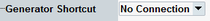

Generator Shortcut
The GPRF generator shortcut improves the usability for non-signaling tests where the EUT's reaction on varying generator signals is measured.

Generator shortcut
Enables you to start the GPRF generator and use GPRF-related hotkeys and softkeys within the measurement application.
The "Generator Shortcut" is only available in the "Standalone (Non Signaling)" mode.
When a connection to the GPRF generator instance is established, two additional softkeys with corresponding hotkey bars provide access to the generator configuration, see "ARB/List Mode, GPRF<i> Generator".
Use the appropriate softkey/hotkey combination to access the generator parameters.
For details on the available parameters, see the GPRF generator documentation.